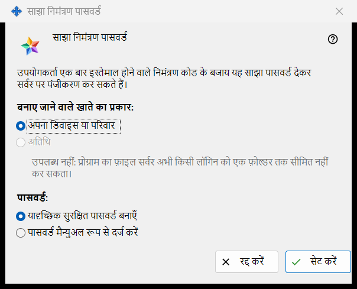
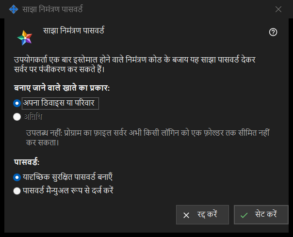

साझा निमंत्रण पासवर्ड
यह किस लिए है
यह विंडो उपयोगकर्ताओं को एक बार उपयोग होने वाले निमंत्रण कोड की जगह एक साझा पासवर्ड से सर्वर पर पंजीकरण करने देती है। इसे एक्सचेंज सर्वर सेटिंग के समूह निमंत्रण में साझा निमंत्रण पासवर्ड पर निशान लगाकर, या उसके पास के बटन साझा पासवर्ड सेट करें.. से खोलें।


इस क्रम में
- खाते का प्रकार चुनें।
- चुनें कि पासवर्ड प्रोग्राम बनाए या आप खुद लिखें।
- सेट करें दबाएँ।
- पासवर्ड बनाया गया हो तो उसे उस विंडो से कॉपी करें जो उसे एक बार दिखाती है।
- इसे स्वीकार करना बंद करने के लिए साझा निमंत्रण पासवर्ड का निशान हटाएँ और पुष्टि करें।
तत्व
खाते का प्रकार
बनाए जाने वाले खाते का प्रकार: अपना डिवाइस या परिवार और अतिथि के विकल्प देता है। अतिथि बंद है और उसके नीचे की पंक्ति कारण बताती है: प्रोग्राम का फ़ाइल सर्वर किसी लॉगिन को एक फ़ोल्डर तक सीमित नहीं कर सकता। साझा पासवर्ड पहले से चालू हो तो उसका मौजूदा प्रकार पहले से चुना होता है। वह मौजूदा प्रकार अतिथि हो तो बटन सेट करें बंद रहता है; साझा पासवर्ड को फिर भी बंद किया जा सकता है।
पासवर्ड
पासवर्ड: दो विकल्प देता है: यादृच्छिक सुरक्षित पासवर्ड बनाएँ (पहले से चुना हुआ) और पासवर्ड मैन्युअल रूप से दर्ज करें। सेट करें दबाने के बाद हाथ से लिखा पासवर्ड एक पासवर्ड विंडो में माँगा जाता है, जो नियम जाँचती है: कम से कम 10 अक्षर, जिनमें एक बड़ा लैटिन अक्षर, एक छोटा लैटिन अक्षर और एक अंक हो। उस विंडो को रद्द करने पर आप यहीं लौट आते हैं।
सेट करें
बटन सेट करें पासवर्ड और खाते का प्रकार सर्वर को भेजता है और साझा पासवर्ड चालू करता है। बनाया गया पासवर्ड एक बार अलग विंडो में दिखता है: उसे वहीं कॉपी करें, उसे दोबारा पढ़ा नहीं जा सकता। जो भी पासवर्ड जानता है वह चुने गए प्रकार का खाता पंजीकृत कर सकता है, इसलिए उसे केवल उन्हीं को दें जिन्हें आप आने देना चाहते हैं। सफल होने पर पेज यह दिखाता है: साझा निमंत्रण पासवर्ड सहेजा और सक्रिय किया गया। और चेकबॉक्स के नीचे की स्थिति पंक्ति में लिखा होता है: साझा पासवर्ड चालू है (खाते का प्रकार: ..)।
बंद करना
निशान हटाने पर यह प्रश्न पूछा जाता है: क्या साझा निमंत्रण पासवर्ड बंद करना है? इससे नए पंजीकरण संभव नहीं होंगे। डिफ़ॉल्ट चुनाव नहीं पर रहता है। हाँ के बाद पेज दिखाता है: साझा निमंत्रण पासवर्ड बंद कर दिया गया। और स्थिति पंक्ति में लिखा होता है: साझा पासवर्ड बंद है।
रद्द करें
बटन रद्द करें या Esc विंडो बंद कर देते हैं और कुछ नहीं बदलते। अगर आपने उसे चेकबॉक्स पर निशान लगाकर खोला था, तो चेकबॉक्स अपनी पिछली स्थिति में लौट आता है।
प्रबंधक सेटिंग · SFTP साझाकरण सेटिंग · एक्सचेंज सर्वर सेटिंग